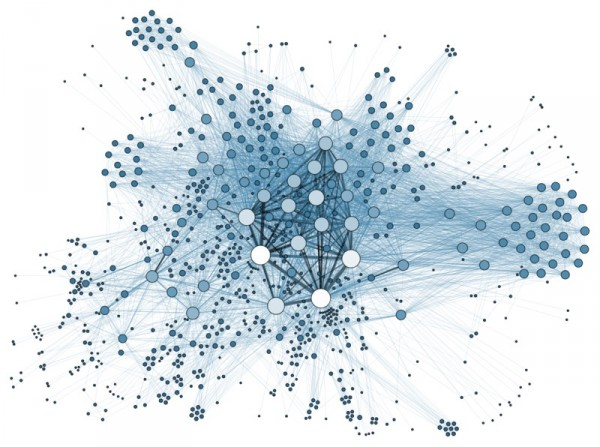

I'm a Computer Science PhD student in the Distributed System Group (DSG) at University of South Florida under Adriana Iamnitchi. I received a B.Sc. (Hons.) in Computer Science from University of Colombo School of Computing, Sri Lanka. Also I'm a visiting researcher at University of Colombo. In past summers, I have worked at Cake Labs (aka Leapset Engineering) in the Data & Analytic team and interned at Umea University, Sweden as an exchange student to volunteer on research activities.
Also I enjoy acting as an ambassador for ACM.
Graduate GPA*: 3.95/4.00
Bachelor GPA: 3.84/4.00
Major Graph Theory and Algorithms, Computational Sociology, Social Dynamics
Contact
sameera1 [at] mail [dot] usf [dot] edu
(813) 409-9303
Projects
The objective of this work is to develop technologies for high-fidelity simulation of online social behavior (the spread and evolution of online information) while rigorously testing and measuring simulation accuracy |
 | ||
The objective of this work is to provide big data owners with tools to safely share their social networks data with the research community. The project aims to approach graph anonymization via two techniques for graph generation: dK-series techniques, introduced in the context of internet network generation, and Exponential Random Graph Model-based approaches (ERGM). My contribution is related to privacy/ utility measures, and how such graph annonymization techniques could apply on evolving graphs. |
|||
We (DSG) examine several hypotheses about team formation and team performance using a large, longitudinal dataset from team-based online gaming environment. Specifically, we are collecting and analyzing data and model team behavior to understand how teams form and the determinants of successful performance. |
|||
EC2PubSubK is a novel content-based Top-k publish/subscribe model implemented on top of Amazon Kinesis. |


|
||
As an undergraduate, I explore how to design scalable concurrent programs on top of Software Transactional Memory, and the journey was documented by a literature review for a course-work. |

|